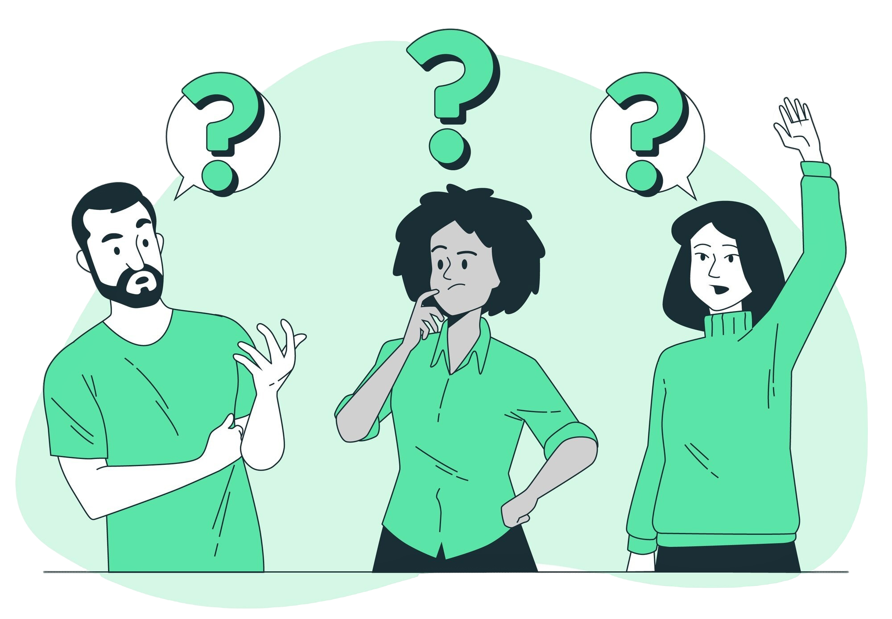
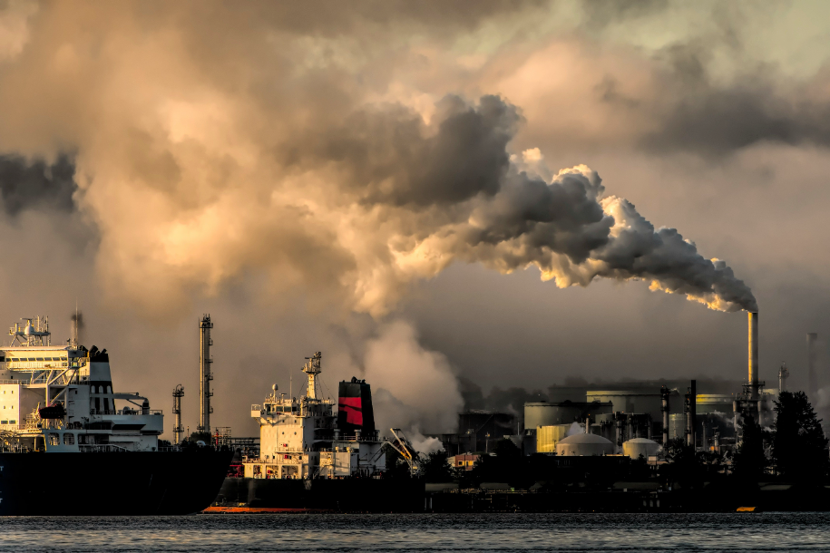
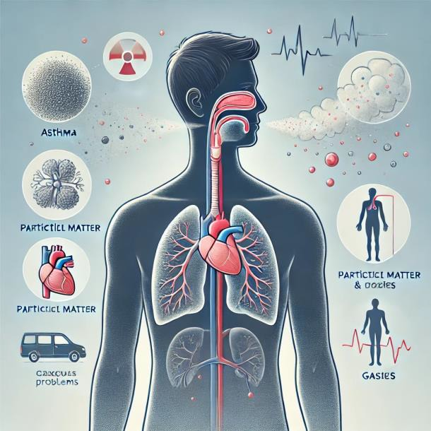
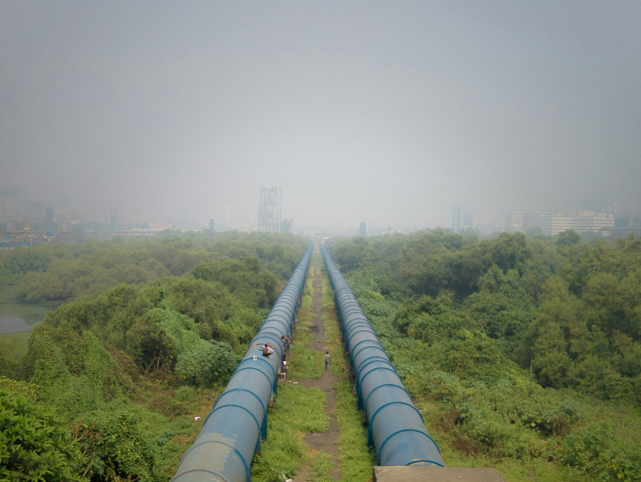
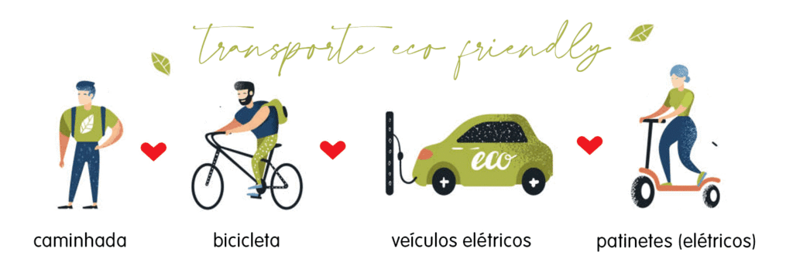
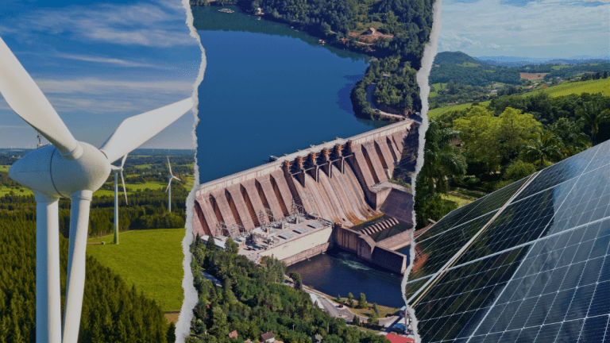
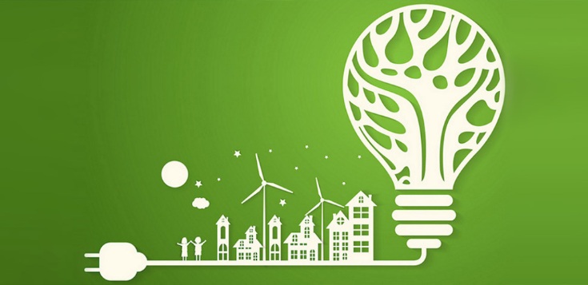

Aprenda mais!
Entenda a importância de um ar limpo para a saúde e o meio ambiente.
Todas as pessoas têm o direito de respirar um ar puro. Essa é a base do Dia Internacional do Ar Limpo por um Céu Azul, celebrado em 7 de setembro, uma data criada pela Organização das Nações Unidas (ONU) para chamar a atenção para essa questão importante. A maior parte da população mundial está exposta diariamente a substâncias e resíduos perigosos, aumentando o risco de desenvolver doenças e condições debilitantes ao longo da vida. Segundo um relatório da Organização Mundial da Saúde (OMS), 97% das cidades em países de renda média ou baixa não seguem os padrões de qualidade do ar recomendados pela organização. A OMS também revela que, a cada ano, cerca de sete milhões de mortes prematuras são causadas pelos efeitos da poluição do ar. Além disso, o ar de baixa qualidade também prejudica o clima, a produção de alimentos, a biodiversidade e os ecossistemas.
Segundo a CETESB, poluente atmosférico é qualquer matéria ou energia que, em quantidade, concentração ou tempo excessivo, torna o ar impróprio, nocivo ou ofensivo à saúde, ao bem-estar, à fauna, flora e à segurança. A poluição é mais intensa em áreas urbanas devido a veículos, indústrias e usinas termelétricas, que emitem substâncias tóxicas, causando problemas de saúde como dificuldades respiratórias, câncer, doenças cardiovasculares, irritações nos olhos e vias respiratórias, além de agravar doenças como asma e bronquite. Os principais poluentes incluem monóxido de carbono, óxidos de nitrogênio, hidrocarbonetos, dióxido de enxofre e material particulado, e também as queimadas contribuem para a poluição do ar.
A poluição do ar é uma grave crise de saúde pública global, responsável por uma em cada nove mortes. A exposição ao material particulado fino (PM 2,5) reduziu a expectativa de vida média mundial em cerca de um ano e oito meses. Essas partículas, com diâmetro inferior a 2,5 micrômetros, penetram nos pulmões e podem atingir a corrente sanguínea, causando doenças fatais como AVC, doenças cardíacas, doenças pulmonares crônicas, infecções respiratórias e câncer de pulmão. Também agravam condições como diabetes, afetam o desenvolvimento cognitivo das crianças e podem causar problemas de saúde mental. A exposição prolongada ao PM 2,5 está associada a declínios no aprendizado, memória e ao aumento de quadros de ansiedade e depressão, tornando a poluição do ar uma preocupação de saúde pública em áreas urbanas e rurais afetadas por queimadas.
A poluição do ar causa impactos ambientais significativos, afetando tanto o patrimônio natural quanto cultural. A chuva ácida, formada pela reação de poluentes como óxidos de enxofre e nitrogênio com a água no ar, corroe monumentos e construções históricas, acelerando a degradação de edifícios e esculturas. Além disso, poluentes como os clorofluorocarbonos (CFCs) danificam a camada de ozônio, formando buracos que aumentam o risco de câncer de pele e prejudicam a biodiversidade. A liberação de gases como dióxido de carbono (CO2) e metano (CH4) intensifica o efeito estufa, causando o aquecimento global e mudanças climáticas, como derretimento das calotas polares, aumento do nível do mar e mais eventos climáticos extremos, afetando ecossistemas ao redor do mundo.
Reduzir a poluição do ar exige ações coordenadas em diversas frentes, tanto por parte dos governos quanto por indivíduos e comunidades. Abaixo estão algumas das medidas mais eficazes e explicativas sobre como podemos contribuir para melhorar a qualidade do ar e reduzir os impactos ambientais e na saúde pública.
Entenda:
A substituição do transporte individual pelo transporte coletivo, como ônibus, trens e metrôs, é uma medida fundamental. Incentivar o uso de bicicletas e a caminhada também contribui significativamente para a redução da emissão de poluentes.
Promover o uso de energias limpas, como solar e eólica, reduz a dependência de combustíveis fósseis, que são grandes responsáveis pela poluição do ar. A transição para uma matriz energética mais sustentável é essencial para mitigar os impactos da poluição.
Implementar práticas de eficiência energética, como o uso de equipamentos e tecnologias que consomem menos energia, contribui para a redução da queima de combustíveis fósseis e, consequentemente, da poluição atmosférica.
Os governos têm um papel crucial na formulação de leis e políticas que visem à redução das emissões de poluentes. Isso inclui regulamentações mais rigorosas para indústrias e incentivos para a adoção de práticas sustentáveis.
Promover a conscientização sobre a poluição do ar e seus efeitos é fundamental. A educação ambiental nas escolas e comunidades pode incentivar hábitos sustentáveis e mobilizar a população em prol de um ar mais limpo.